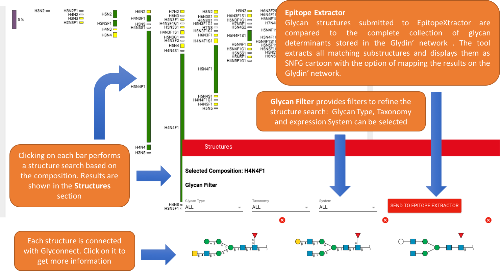

<!--
@license
Copyright (c) 2016 The Polymer Project Authors. All rights reserved.
This code may only be used under the BSD style license found at http://polymer.github.io/LICENSE.txt
The complete set of authors may be found at http://polymer.github.io/AUTHORS.txt
The complete set of contributors may be found at http://polymer.github.io/CONTRIBUTORS.txt
Code distributed by Google as part of the polymer project is also
subject to an additional IP rights grant found at http://polymer.github.io/PATENTS.txt
-->

<link rel="import" href="../bower_components/polymer/polymer.html">
<link rel="import" href="../bower_components/paper-toolbar/paper-toolbar.html">
<link rel="import" href="my-icons.html">
<link rel="import" href="shared-styles.html">

<dom-module id="about-view">
    <template>
        <style include="shared-styles">
            :host {
                display: block;
                padding: 10px;
            }


            img {
                max-width: 100%;
                max-height: 100%;
                margin-left: auto;
                margin-right: auto;
                display: block;
            }


            .alert {
                padding: 10px 10px 10px 10px;
                margin: 30px;
                border-radius: 3px;
                font-size: 15px;
            }


            .alert.alert-info {
                background-color: #e87d89;
                border: 1px solid #e2011b;
                color: #000;
            }

        </style>


        <div class="card">
            <paper-toolbar>
                <div class="title">Quick tour of Glynsight</div>
            </paper-toolbar>
            <div class="card-container">
                <h1>Import Experiments</h1>
                <h3>Data format</h3>
                <p>Glynsight only processes <b>CSV files.</b></p>
                <p>A experiment template file is available: <a href="/glynsight/resource/example.csv" target="_blank"><strong>Click here to download Example File</strong></a></p>
                <p>All CSV files must contain a column for glycan composition and one for glycan expression as percentage or any other unit.
                    As shown in the example file, glycan composition column must be named "<i>composition</i>" whereas glycan expression column must be named "<i>quantification</i>".</p>

                <div class="alert alert-info">
                    <strong>Important:</strong>
                    Glynsight uses the glycan compositions as listed in the first uploaded experiment as the global list.
                    In other words glycan compositions, which are not present in the first experiment will not be displayed in the tool.
                    To avoid any issue please make sure the first experiment your upload contains all possible glycan compostions in your set of experiments.
                </div>
                <h3>Data Import</h3>
                
                To import new experiments:
                <ul>
                    <li>Under "Manage Experiment", click on "Import Experiments" in the left side menu to show the upload pop-up .</li>
                    <li>In the upload pop-up, click on "UPLOAD FILES" and search the experiments in the file system.</li>
                    <li>Click on "FINISH UPLOAD" to conclude the upload.</li>
                </ul>
                Glynsight will automatically check files and import them in the Experiment List.
                If files present problems, they will be discarded and an error message will appear next to the file name.

                <h1>Manage Experiments</h1>
                Once the experiments are imported in the "Experiment list " on the left side menu, the user can:
                <ul>
                    <li>Rename each experiment clicking on "Rename Experiments".</li>
                    <li>Delete all the experiment using "Remove all Experiments" button.</li>
                    <li>Remove only one selected experiment clicking on "Remove Selected Experiment" </li>
                </ul>
                <div class="alert alert-info">
                    <strong>Important:</strong>
                    The button "Remove Selected Experiment" is available only in "Individual Display". On "Differential Display" the button is disabled.
                </div>

                <h1>Manage Session</h1>
                Glynsight can record in a single file a work session during which several experiments were uploaded.
                This file can then be used to restore the session in the future.
                <ul>
                    <li>To download a session file, simply click on Download Session. The session file is named by Glynsight with the .json extension.</li>
                    <li>To upload the session file, click on Upload Session and select a valid file (with the .json extension) in the file system.</li>
                </ul>

                <div class="alert alert-info">
                    <strong>Important:</strong>
                    This functionality may create problems with the Safari and Internet Explorer browsers. We recommend Firefox or Chrome for the time being.
                </div>

                <h1>Demo Experiments</h1>
                Glynsight provides a set of demo experiments. The user can test the application using this set of experiments before uploading real ones.
                In order to use demo experiments, click on "Load Demo Experiments" on the left side menu.

                <h1>Visualize Experiments</h1>
                To Visualize an experiment, search its name into the Experiment list on the left side menu and click on it.
                Glynsight runs on two different display modes: <strong>Individual display and Differential display</strong>.

                

                <h3>Individual Display</h3>
                <p>The Individual Display shows a particular experiment selected in the side list.</p>

                
                <h3>Differential Display</h3>
                <p>In contrast with the previous mode, the Differential Display mode shows the comparison of two experiments.
                After clicking on "Differential Display" under the Display mode menu, the user can select two experiments in the left side menu.
                In this mode, Glynsight computes and shows the difference between the two experiments.</p>

                

                <h1>Mapping compositions with glycan structures</h1>

                <p></p>


                <h1>Download Result Image</h1>
                <p>Glynsight provides a download option for the visualised profile diagram in the SVG format.
                In order to download the image click on the download sign in the Visualizer top red banner.</p>

                
                <div class="alert alert-info">
                    <strong>Important:</strong>
                    This functionality may create problems with the Safari and Internet Explorer browsers. We recommend Firefox or Chrome for the time being.
                </div>
            </div>
        </div>
    </template>

    <script>
        Polymer({
            is: 'about-view'
        });
    </script>
</dom-module>
